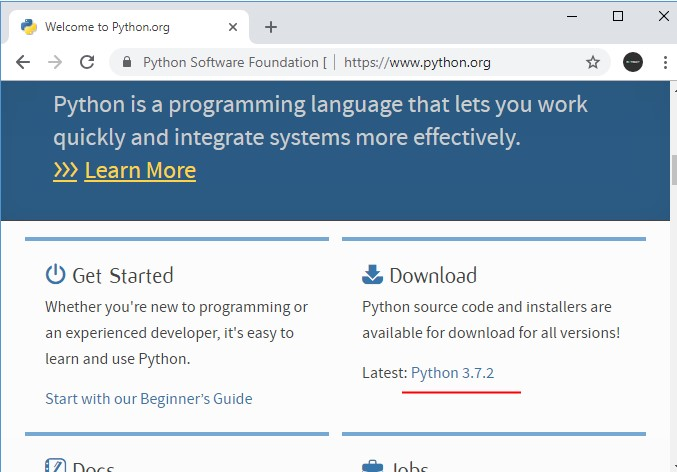
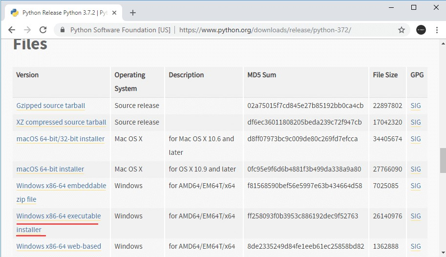
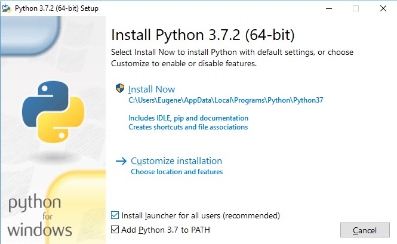
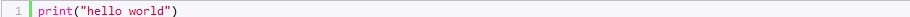
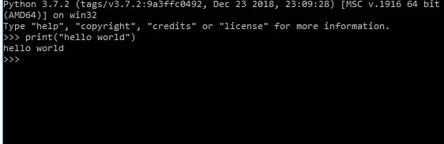
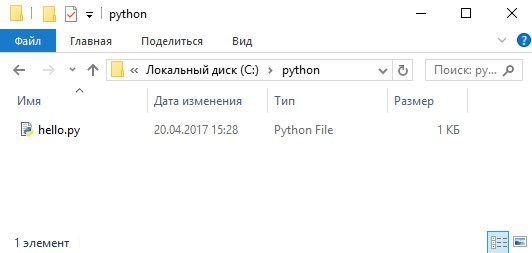
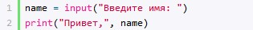

From the Firehose
Основи мови програмування Python
Python являє популярну високорівневу мова програмування, який призначений для створення додатків різних типів. Це і веб-додатки, і ігри, і настільні програми, і робота з базами даних. Досить велике поширення пітон отримав в області машинного навчання і досліджень штучного інтелекту. Вперше мова Python був анонсований в 1991 році голландським розробником Гвідо Ван Россум. З тих пір ця мова виконав великий шлях розвитку. У 2000 році була видана версія 2.0, а в 2008 році - версія 3.0. Незважаючи на кшталт такі великі проміжки між версіями постійно виходять підверсії. Так, поточної актуальною версією на момент написання даного матеріалу є 3.7. Більш детальнуінформацію про всіх релізах, версіях і зміни мови, а також власне інтерпретатори і необхідні утиліти для роботи та іншу корисну інформацію можна знайти на офіційному сайті https://www.python.org/. Основні особливості мови програмування Python: Скриптова мова. Код програм визначається у вигляді скриптів. Підтримка самих різних парадигм програмування, в тому числі об'єктно-орієнтованої та функціональної парадигм. Інтерпретація програм. Для роботи зі скриптами необхідний інтерпретатор, який запускає і виконує скрипт. Виконання програми на Python виглядає наступним чином. Спочатку ми пішім в текстовому редакторі скрипт з набором виразів на даній мові програмування. Передаємо цей скрипт на виконання інтерпретатора. Інтерпретатор транслює код в проміжний байткод, а потім віртуальна машина переводить отриманий байткод в набір інструкцій, які виконуються операційною системою. Тут варто зазначити, що хоча формально трансляція інтерпретатором вихідного коду в байткод і переклад байткода віртуальною машиною в набір машинних команд представляють два різних процеси, але фактично вони об'єднані в самому інтерпретатор.
Основні особливості мови програмування Python
Скриптова мова. Код програм визначається у вигляді скриптів.
Підтримка найрізноманітніших парадигм програмування, у тому числі об'єктно-орієнтованої та функціональної.
Інтерпретація програм. Для роботи зі скриптами необхідний інтерпретатор, який запускає і виконує скрипт.
Встановлення Python
Для створення програм на Python нам буде потрібно інтерпретатор. Для його установки перейдемо на сайт https://www.python.org/ і на головній станиці в секції Downloads знайдемо посилання на завантаження останньої версії мови (на даний момент це 3.8.0):
Перейдемо за посиланням на сторінку з описом останньої версії мови. Ближче до низу на ній можна знайти список дистрибутивів для різних операційних систем. Виберемо потрібний нам пакет і завантажимо його. Наприклад, в моєму випадку це ОС Windows 64-х розрядна, тому я вибираю посилання на пакет Windows x86-64 executable installer. Після завантаження дистрибутива встановимо його.

На ОС Windows при запуску інсталятора запускається вікно майстра установки.
Після встановлення Python готовий до роботи.
Перша програма на Python
Після установки інтерпретатора, як було описано в минулій темі, ми можемо почати створювати додатки на Python. Отже, створимо першу простеньку програму. Як було сказано в минулій темі, програма інтерпретатора, якщо при установці не був змінений адреса, за замовчуванням встановлюється на Linux по шляху usr / local / bin / python37, а на Windows по шляху C: \ Users \ [ім'я користувача] \ AppData \ Local \ Programs \ Python \ Python37 \ і представляє файл під назвою python.exe.
Запустимо інтерпретатор та введемо у нього наступний рядок:
Консоль виведе наступний рядок:
Для цієї програми використовувався метод print()
Створення файла програми
У реальності, як правило, програми визначаються у зовнішніх файлах-скриптах і потім передаються інтерпретатору на виконання. Тому створимо файл програми. Для цього на диску C або де-небудь в іншому місці файлової системи визначимо для скриптів папку python. А в цій папці створимо новий текстовий файл, який назвемо hello.py. За замовчуванням файли з кодом на мові Python, як правило, мають розширення py.
Відкриваємо цей файл у будь-якому редакторі і додаємо у нього наступний код.
Скрипт складається з двох рядків. Перший рядок за допомогою методу input () очікує введення користувачем свого імені. Введене ім'я потім потрапляє в змінну name. Другий рядок за допомогою методу print () виводить вітання разом з введеним ім'ям.